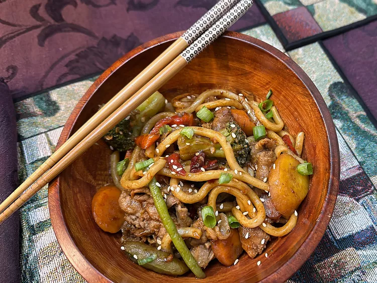

Noodles

Description:
These spicy vegetable beef udon noodles are a flavorful dish combining
tender beef, vegetables, udon noodles, and a spicy, savory garlic sauce.
Ingredients
- 1/2 tablespoons soy sauce
- 1 tablespoon dark soy sauce
- 1 teaspoon chili oil, or to taste
- 1 1/2 tablespoons oyster sauce
- 1 1/2 tablespoons honey
- 1 1/2 tablespoons sesame oil
- 1 1/2 tablespoons water
- 1 1/2 teaspoons sesame seeds
1 pound udon noodles
1 tablespoon grapeseed oil
4 cloves garlic, minced
- 2 cups frozen stir-fry vegetables
- 1/2 pound rib eye steak, thinly sliced
- 2 green onions, thinly sliced